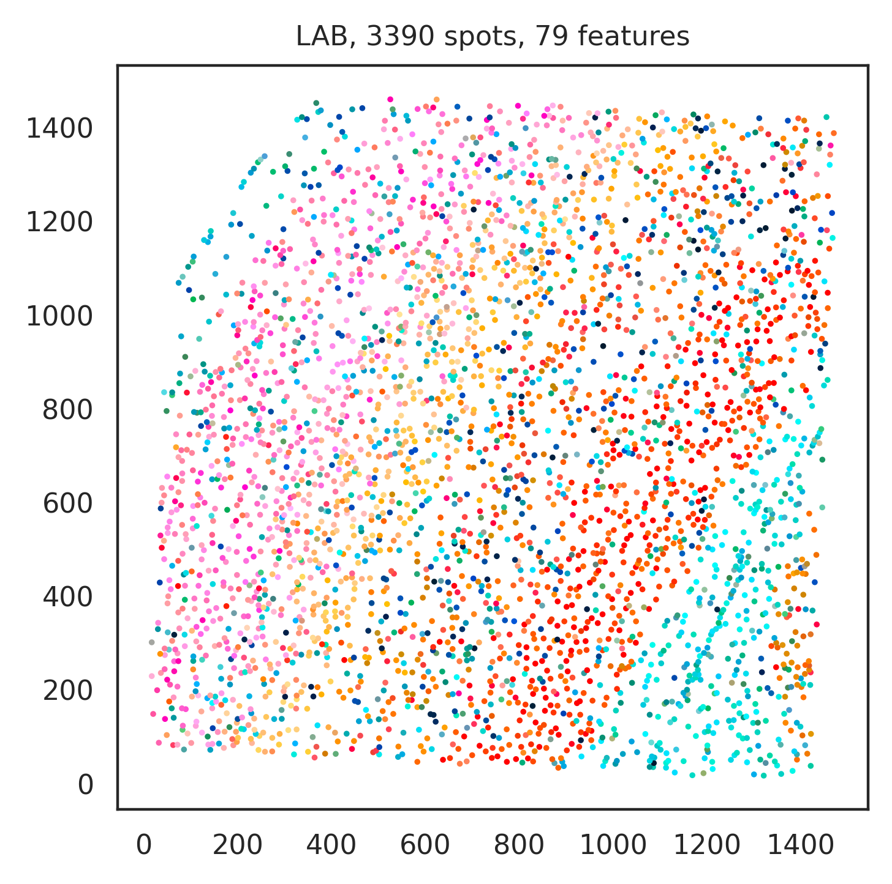
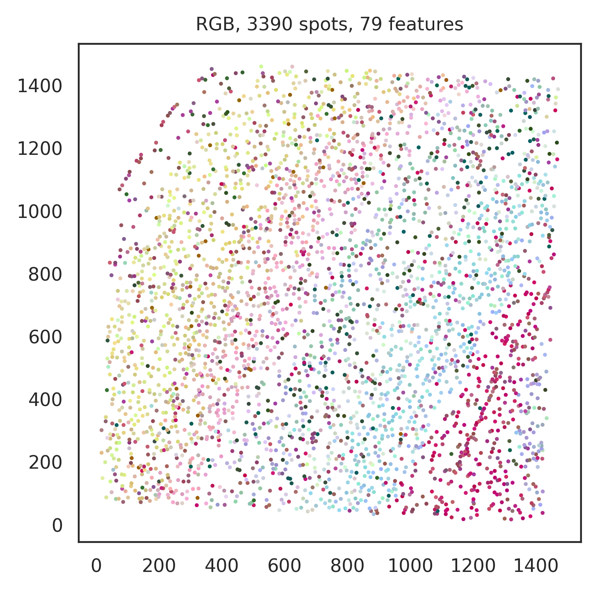

Sun2021Integrating
This tutorial demonstrates how to utilize SOVIew (a spatial omics visualization tool) to quickly visualize data fetched by pysodb, helping users quickly determine what is the tissue organization of the data, and avoiding time-consuming preprocessing, clustering, etc.
load data using pysodb
[1]:
# Import pysodb package
# Pysodb is a Python package that provides a set of tools for working with SODB databases.
# SODB is a format used to store data in memory-mapped files for efficient access and querying.
# This package allows users to interact with SODB files using Python.
import pysodb
[2]:
# Initialize the sodb object
sodb = pysodb.SODB()
[3]:
# Define names of the dataset_name and experiment_name
dataset_name = 'Sun2021Integrating'
experiment_name = 'Slice_1'
# Load a specific experiment
# It takes two arguments: the name of the dataset and the name of the experiment to load.
# Two arguments are available at https://gene.ai.tencent.com/SpatialOmics/.
adata = sodb.load_experiment(dataset_name,experiment_name)
load experiment[Slice_1] in dataset[Sun2021Integrating]
plot SOView
[4]:
# Import SOView package
import SOView
/home/linsenlin/anaconda3/envs/SOView/lib/python3.8/site-packages/tqdm/auto.py:21: TqdmWarning: IProgress not found. Please update jupyter and ipywidgets. See https://ipywidgets.readthedocs.io/en/stable/user_install.html
from .autonotebook import tqdm as notebook_tqdm
scanpy==1.9.1 anndata==0.8.0 umap==0.5.2 numpy==1.22.4 scipy==1.7.3 pandas==1.5.3 scikit-learn==1.0.2 statsmodels==0.13.5 python-igraph==0.10.4 pynndescent==0.5.8
squidpy==1.1.2
[5]:
# Visualize data fetched by pysodb by utilizing SOVIew
SOView.SOViewer_plot(
adata = adata, # the data to plot
#save = f'figures/{dataset_name}_{experiment_name}', # save the result to specified path or don't save (None)
embedding_use='X_umap', # which embedding to be used for plot
dot_size=3, # the marker size of the plot
marker = 'o' # marker style
)
generating color coding...
1.0 0.0

1.0 0.0
